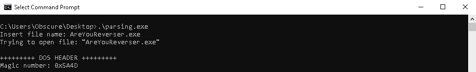
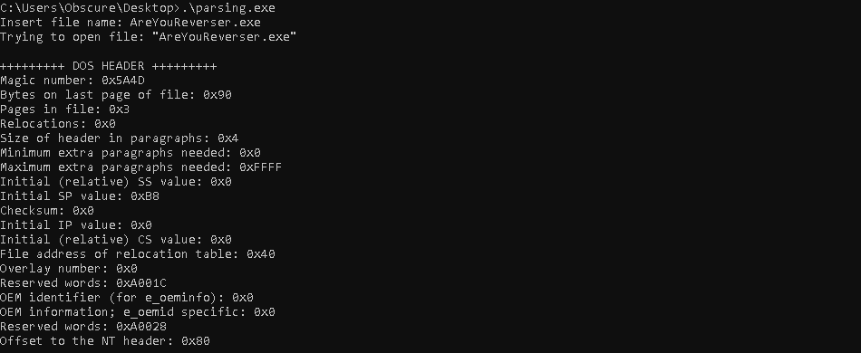
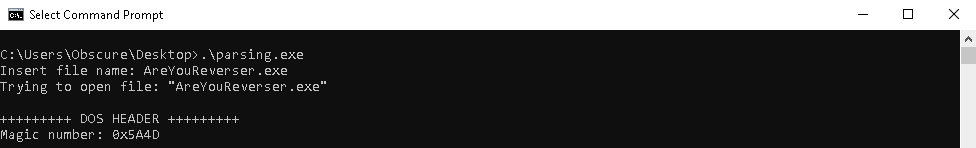
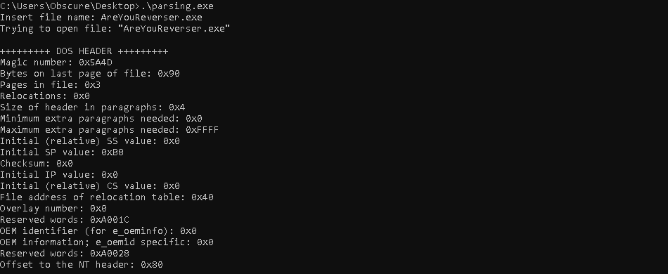
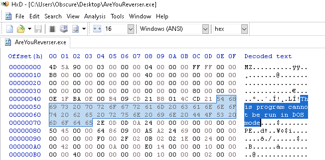

Parsing x64 PE File
Introduction
In this section, we will explore how to parse a 64-bit Windows Portable Executable (PE) file using the C programming language. The goal is to understand the internal structure of a PE file, including its DOS header, PE signature, and file header, as well as extract key metadata such as the number of sections and important flags. Parsing PE files is a fundamental skill in reverse engineering, malware analysis, and software debugging, as it allows us to inspect executables at a low level and understand how they are structured in memory.
PE Structure
The figure below shows the structure of a Portable Executable.

DOS Header (IMAGE_DOS_HEADER)
The first two bytes of the file specifically, the first two bytes of the DOS header, are generally 0x4D and 0x5A,
which correspond to the characters MZ. These bytes identifies the file as a valid executable and they are called
Magic number. The DOS header is a data structure which contains several data items. The most important are: e_magic
which is the Magic number and e_lfanew which is a 4-byte value that gives the offset to the start of the NT Header.
The C code snippet below shows the file handle being passed to the Parsing_pe function. This handle is then used to map
the file into memory. After mapping, a pointer to the DOS header, pImgDosHdr, is obtained for the file in memory.
Using this pointer, the program prints the magic number.
 The figure below shows the program execution. As we can see, the magic number is 0x5A4D (MZ), confirming that the
file is a valid executable.

For completeness, the figure below shows the output of all the fields in the DOS header with their corresponding values.

The figure below shows the program execution. As we can see, the magic number is 0x5A4D (MZ), confirming that the
file is a valid executable.

For completeness, the figure below shows the output of all the fields in the DOS header with their corresponding values.

DOS Stub
Following the DOS header, the DOS stub contains an error message that displays "This program cannot be run in DOS mode" when the program is run in DOS as shown the figure below using HxD. 
NT Header (IMAGE_NT_HEADERS)